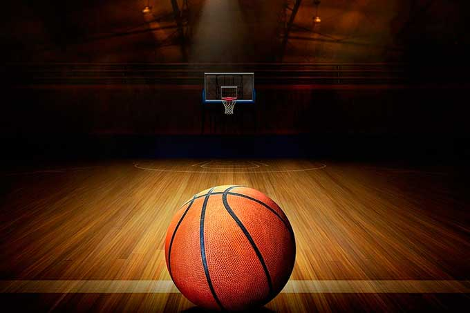
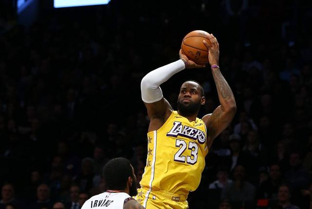

Un partido debe ser dirigido por tres árbitros, uno principal y dos auxiliares. Estos serán ayudados por los oficiales de mesa (artículo 45.1 Reglas Oficiales FIBA 2014).58La mesa se compone de anotador, ayudante de anotador, cronometrador, operador de la regla de 24 segundos y, si lo hubiera, comisario; su función es controlar todas las incidencias del partido y elaborar el acta del partido. Los árbitros y sus ayudantes dirigirán el juego de acuerdo con las reglas e interpretaciones oficiales. El árbitro principal decidirá en cualquier situación de discrepancia entre árbitros auxiliares, mesa de anotadores, dudas de validez en las canastas, dará su aprobación al acta, es el responsable de verificar, inspeccionar y aprobar todos los elementos técnicos y podrá tomar decisiones sobre situaciones no reglamentadas ni regladas. Los árbitros se pueden comunicar con la mesa de anotadores y con el resto de árbitros mediante la gesticulación, señalizando las incidencias con una serie de señales preestablecida. Las funciones de los Oficiales de Mesa vienen recogidas en los artículos 47, 48 y 49 de la Reglas Oficiales FIBA 2014.
| Se puede lanzar el balón con una o dos manos en cualquier dirección. | Se puede palmear el balón con una o ambas manos en cualquier dirección. | No se puede correr con el balón en las manos. El jugador debe lanzarlo desde el lugar donde lo toma. | El balón solo puede sujetarse con las manos, no con los brazos ni con el cuerpo. | |
| No se permite cargar con el hombro, agarrar, empujar, golpear o zancadillear a un oponente. Las infracciones a esta regla constituyen una falta y, en caso de repetirse el jugador será eliminado hasta que se marque una canasta. | Por las reglas 3 y 4, no se permite golpear el balón con el puño. La violación de esta regla se sancionan según lo descrito en la regla 5. | Si un equipo hace tres faltas consecutivas sin que el oponente haya realizado ninguna en ese intervalo, el equipo contrincante se anotará un punto. | Se consiguen puntos cuando el balón lanzado o palmeado desde la pista, entra en el cesto y permanece allí sin que el equipo atacante toque o mueva el cesto. Si el balón se queda en el borde y un contrincante mueve la cesta, contará como un punto para los atacantes. | Cuando el balón sale fuera de la pista se lanzará de nuevo al campo de juego y entrará en posesión de la primera persona en tocarlo. En caso de duda, el árbitro auxiliar lanzará el balón a lo alto y dos oponentes intentarán interceptarlo saltando. El jugador que saca dispone de cinco segundos. Si tarda más, el balón pasa al oponente. Si un equipo retrasa el juego de forma continua, cometerá una falta. |
| El árbitro auxiliar vigila a los jugadores y anota las faltas, avisando además al árbitro principal cuando un equipo cometa tres faltas consecutivas. Puede eliminar a los jugadores conforme a la regla 5. | El árbitro principal vigila el balón y decide cuando está en juego, cuando ha salido de la pista y a quién le pertenece. Decide cuándo se consigue un punto, lleva la cuenta del marcador y controla el tiempo junto con otras tareas propias de un árbitro. | |||